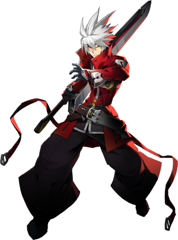

◈ HIGH RISK · HIGH REWARD
Ragna
BlazBlue: Entropy Effect — Персонаж
90
Атака
50
Защита
70
Скорость
85
HP
★★☆
Сложность
Ближний
Тип боя
Ragna — главный «бруизер» BlazBlue Entropy Effect. Его стиль игры построен на принципе «высокий риск — высокая награда»: он тратит HP для проведения мощных атак на весь экран, таких как Titan Scissors. Балансируя между потерей HP и его восстановлением через успешные атаки, Ragna способен подавлять любого врага в своём темпе.
Energy Siphon
Battle Surge
Super Armor

01
Досье персонажа
Имя
Ragna
Оружие
Клинок-полуторник
Уникальная механика
Energy Siphon — трата HP на навыки с последующим восстановлением при попадании
Роль
Агрессивный бруизер / High Risk — High Reward
Особенность
Множество неуязвимых движений, тройной прыжок, супер-броня
Боевые характеристики
ATK90
DEF50
SPD70
HP85
Талант (Talent)
Battle Surge
После получения урона урон от навыков увеличивается на 25% на 10 секунд. Эффект суммируется (25% → 25% → 13% → 8% → 4%...). Даже 4 получения урона дают +71% к урону навыков.
После получения урона урон от навыков увеличивается на 25% на 10 секунд. Эффект суммируется (25% → 25% → 13% → 8% → 4%...). Даже 4 получения урона дают +71% к урону навыков.
02
Навыки и приёмы
Shadow Spike
Наследуемый навык 1
Тратит 20% текущего HP для запуска атаки с эффектом восстановления при попадании.
Отправляет вперёд снаряд (как у заряженной атаки Ragna). Эффект восстановления увеличивается с уровнем.
Благодаря низкой стоимости HP, можно использовать для восстановления сил прототипа при низком здоровье.
Crimson Pact [EX]
Наследуемый навык 2 (EX)
Непрерывно снижает HP в течение 10 секунд, но весь наносимый урон увеличивается на 12%,
и все атаки получают эффект восстановления. Увеличение урона растёт с уровнем.
Уникальное свойство: увеличивает урон тактик (Tactics), что редкость среди баффов.
Постоянная потеря HP триггерит талант Battle Surge, ещё больше усиливая урон.
Titan Scissors
[Ground] Skill
Атака на весь экран. Ragna тратит значительную часть HP ради мощнейшего удара.
Стоимость зависит от текущего HP — чем больше здоровья, тем дороже навык.
Использование в воздухе быстрее и имеет лучшую дальность, чем наземная версия.
Наземную версию можно прервать рывком, пропуская второй удар.
Gauntlet Hades
[Airborne] Attack > Skill > Skill
После атаки в воздухе нажмите Skill дважды: Ragna выполняет восходящий удар ногой, переходящий в вертикальный Shadow Spike.
Восстанавливает HP. Стоимость: 50 MP за каждое использование Skill.
Abyss Edge
[Airborne] Down + Attack > Skill > Skill
После использования [Airborne] Down + Attack нажмите Skill дважды: Ragna выполняет рубящий удар сверху, переходящий в Shadow Spike.
Восстанавливает HP. Стоимость: 50 MP за каждое использование Skill.
[Airborne] Attack
Воздушная атака
Удар вперёд, затем plunging attack (удар вниз). Удержание кнопки «вниз» при атаке заставляет Ragna немедленно выполнить plunging attack.
В воздухе Ragna может использовать Jump или Dash для сброса лимита воздушных атак, что позволяет выполнять бесконечные воздушные комбо.
Inferno Wave
[Ground] Attack > Skill
После наземной атаки отправляет ударную волну и восстанавливает HP. Стоимость: 50 MP.
Отличный инструмент для поддержания здоровья в гуще боя.
Triple Dash
Потенциал (Hidden Effect)
Скрытый эффект при наличии Triple Dash + Increased Dash range:
Во время Dash Attack нажмите Attack снова, чтобы выполнить ещё один Dash Attack — до 3 раз подряд.
Позволяет стремительно перемещаться по арене и уклоняться от атак.
03
Основные механики
Energy Siphon — Риск и награда
При использовании любой атаки с затратами MP Ragna тратит часть текущего HP для увеличения урона навыка.
Если навык попадает по врагу, часть здоровья восстанавливается с небольшой задержкой.
Трата HP всегда идёт от текущего здоровья (на высоком HP тратится больше, на низком — меньше).
Восстановление HP всегда зависит от максимального здоровья.
Из-за этой механики Ragna обычно балансирует на уровне 30–60% от максимального HP — выше он теряет больше, чем восстанавливает, ниже — восстанавливает больше, чем теряет.
Тройной прыжок
Ragna может совершать тройной прыжок. При получении урона он может немедленно восстановиться прыжком и стать неуязвимым на 1 секунду.
Super Armor
Многие атаки Ragna дают ему Super Armor (супер-броню), позволяя не прерываться при получении урона и пробивать вражеские атаки.
Сброс воздушных атак
В воздухе Ragna может использовать Jump или Dash для сброса лимита воздушных атак, что позволяет выполнять бесконечные воздушные комбо.
Universal Enhancement: Crimson Pact
С этим улучшением прыжковые атаки Ragna тратят HP, а затем восстанавливают его.
Потраченное HP зависит от текущего здоровья, расширяя механику Energy Siphon на все атаки.
04
Советы по игре
- 🔥Ragna — отличный выбор для новичков. Механика восстановления HP и простые комбо делают его очень forgiving для изучения игры.
- 🔥Всегда бери Universal Enhancement: Crimson Pact как можно раньше. Это must-have улучшение, которое заставляет каждую атаку тратить и восстанавливать HP, одновременно увеличивая урон при низком здоровье.
- 🔥Не используй Titan Scissors на полном HP. Стоимость навыка зависит от текущего здоровья — на высоком HP он съедает огромную часть здоровья и не окупается.
- 🔥Балансируй на 30–60% HP. Выше этого порога ты теряешь больше здоровья, чем восстанавливаешь; ниже — восстанавливаешь больше, чем тратишь.
- 🔥Используй воздушную версию Titan Scissors. Она быстрее и имеет лучшую дальность, чем наземная.
- 🔥Crimson Pact [EX] триггерит Battle Surge с каждым тиком. Это эффективный способ разогнать урон навыков до высоких значений.
- 🔥Inferno Wave всегда хорош. Это надёжный инструмент для поддержания здоровья в любой ситуации.